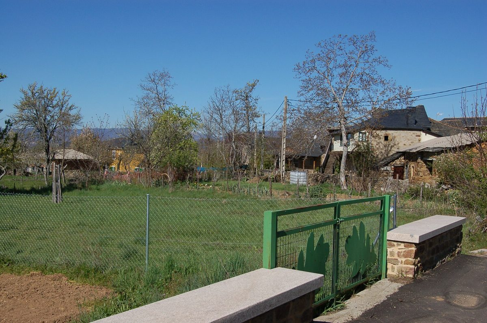

스페인 사나브리아 로블레다 주민 협동조합, 4년 만에 자가소비 태양광 가동…두 마을 조합원 67명

주민 87명 마을서 46명 참여, 지분 1%당 출자 323유로…사업비 25%는 조합원 출자·75%는 지역 금융기관 대출, 잉여 전력 안 팔고 요금 절감액으로 대출 갚아…배전회사 접속 지연에 "4년은 말이 안 된다"
스페인 북서부 사모라주 사나브리아 지역의 로블레다(Robleda) 마을 주민들이 협동조합을 꾸려 지은 자가소비 태양광 발전소가 10월 29일 가동을 시작했다. 같은 조합이 이웃 마을 산살바도르데팔라수엘로(San Salvador de Palazuelo)에 지은 자매 발전소는 7월 24일 먼저 돌기 시작했으며, 주민 87명인 로블레다에서는 46명(전기 계약 47건), 주민 43명인 산살바도르에서는 21명(계약 24건)이 참여해 두 곳을 합친 조합원은 67명, 계약은 71건이다. 발전소는 조합원이 쓰는 전기량에 맞춰 크기를 정한 자가소비·상계 방식이어서 남는 전기를 팔지 않으며, 지분 1%당 323유로를 출자하면 날씨에 따라 대략 800~900kWh의 전기를 무료로 쓸 수 있다. 사업비의 25%는 조합원이 내고 75%는 지역 금융기관 카하 루랄(Caja Rural)에서 빌렸는데, 조합원이 요금 절감액의 일부를 조합에 내 8~10년에 걸쳐 대출을 갚고 그 뒤에는 절감액 전부가 조합원 몫이 된다. 2022년 말 구상해 이듬해 조합을 세우고 시공사를 골랐지만 건설 허가는 2024년에야 나왔고, 2025년 3월 두 발전소를 다 짓고도 배전회사 UFD와의 허가·접속 절차가 늦어져 모두 4년이 걸렸다. 시공사와 그 설계팀 말고는 외부 도움 없이 조합 설립 등록부터 인허가까지 직접 처리했다는 조합원 프란시스코 산체스(Francisco Sánchez)는 이런 작은 발전소에 4년이 걸려서는 안 된다며 행정과 배전회사에 절차를 서둘러 달라고 요구했고, 주민에게 아무 보상 없이 땅을 덮는 대형 발전소에는 반대한다고 밝혔다.
시민에너지 관점
주민 87명 마을에서 46명이 조합원이 되고 사업비의 25%를 스스로 내 나머지 75%를 빌렸다는 것은, 작은 시골 마을도 제 손으로 발전소의 주인이 될 수 있다는 증거다. 스페인은 2019년 왕령으로 이웃이 발전 설비를 함께 쓰는 공동 자가소비의 길을 열었지만, 정작 이 마을을 4년 동안 붙잡은 것은 제도가 아니라 배전회사의 허가·접속 절차였다. 시골 주민이 금융과 행정을 감당할 수 있겠느냐는 걱정에는, 전기를 팔지 않고 요금 절감액으로 대출을 갚는 단순한 구조와 등록부터 인허가까지 직접 해낸 이 마을의 경험이 답이 된다. 국내 햇빛소득마을도 주민 출자 소규모 발전소가 계통 접속 대기에 막히지 않도록, 마을 단위 사업에 접속 절차를 앞당기는 별도 통로를 만들어야 한다.
출처: La Opinión de Zamora 2026-11-04 Irene López Alonso 원문 보기
スペイン・サナブリアのロブレダ住民協同組合、4年がかりで自家消費型太陽光が稼働…二つの村の組合員67人
住民87人の村で46人が参加、持ち分1%あたり出資323ユーロ…事業費の25%は組合員出資、75%は地元金融機関の融資、余剰電力は売らず電気代の節約分で返済…配電会社の接続遅れに「4年はあり得ない」
スペイン北西部サモラ県サナブリア地方のロブレダ（Robleda）村の住民が協同組合をつくって建てた自家消費型の太陽光発電所が、10月29日に稼働を始めた。同じ組合が隣村サン・サルバドール・デ・パラスエロ（San Salvador de Palazuelo）に建てた姉妹発電所は7月24日に先に動き出しており、住民87人のロブレダでは46人（電力契約47件）、住民43人のサン・サルバドールでは21人（契約24件）が参加し、両方を合わせた組合員は67人、契約は71件となる。発電所は組合員が使う電力量に合わせて規模を決めた自家消費・相殺方式で、余った電力は売らず、持ち分1%につき323ユーロを出資すれば、天候によるがおおむね800～900kWhの電力を無料で使える。事業費の25%は組合員が負担し、75%は地元金融機関カハ・ルラル（Caja Rural）から借り入れたが、組合員が電気代の節約分の一部を組合に納めて8～10年で返済し、その後は節約分がすべて組合員のものになる。2022年末に構想し翌年に組合を設立して施工会社を選んだものの、建設許可は2024年になってようやく下り、2025年3月に二つの発電所を完成させた後も配電会社UFDとの許可・接続手続きが遅れ、全体で4年かかった。施工会社とその設計チーム以外の外部の助けを借りず、組合の設立登録から許認可まで自分たちで処理したという組合員フランシスコ・サンチェス（Francisco Sánchez）氏は、このような小さな発電所に4年もかかってはならないとして行政と配電会社に手続きを急ぐよう求め、住民に何の見返りもなく土地を覆う大規模発電所には反対だと述べた。
市民エネルギーの視点
住民87人の村で46人が組合員となり、事業費の25%を自ら出して残る75%を借りたことは、小さな農村も自らの手で発電所の持ち主になれることの証しだ。スペインは2019年の王令で近隣住民が発電設備を共同で使う共同自家消費の道を開いたが、この村を4年間足止めしたのは制度ではなく配電会社の許可・接続手続きだった。農村の住民に資金調達や行政手続きが担えるのかという懸念には、電力を売らずに電気代の節約分で融資を返すという単純な仕組みと、登録から許認可まで自ら成し遂げたこの村の経験が答えになる。韓国の「陽光所得村」でも、住民出資の小規模発電所が系統接続の順番待ちで止まらないよう、村単位の事業の接続手続きを早める別枠の通り道をつくるべきだ。
出典: ラ・オピニオン・デ・サモラ（La Opinión de Zamora） 2026-11-04 Irene López Alonso 原文を読む
西班牙萨纳夫里亚罗夫莱达村民合作社历时4年建成自用光伏电站投运…两个村庄社员67人
87名居民的村庄有46人参加，每1%股份出资323欧元…事业费25%由社员出资、75%来自本地金融机构贷款，余电不售、以电费节省额还贷…配电公司接入延误，"4年太离谱"
西班牙西北部萨莫拉省萨纳夫里亚地区罗夫莱达（Robleda）村的村民组建合作社建设的自发自用光伏电站于10月29日开始运行。同一合作社在邻村圣萨尔瓦多－德帕拉苏埃洛（San Salvador de Palazuelo）建设的姊妹电站已于7月24日率先投运；在居民87人的罗夫莱达有46人参加（用电合同47份），在居民43人的圣萨尔瓦多有21人参加（合同24份），两地合计社员67人、合同71份。电站按社员的用电量确定规模，采用自发自用与抵扣方式，余电不对外出售；每出资323欧元可获得1%的股份，根据天气情况大约可免费使用800至900千瓦时电力。事业费的25%由社员承担，75%向本地金融机构农村储蓄银行（Caja Rural）贷款；社员把电费节省额的一部分交给合作社，用8至10年还清贷款，之后节省的电费全部归社员所有。项目于2022年底构想，次年成立合作社并选定施工企业，但建设许可直到2024年才获批，两座电站在2025年3月建成后，又因与配电公司UFD的许可和接入手续延误，前后共耗时4年。社员弗朗西斯科·桑切斯（Francisco Sánchez）说，除施工企业及其设计团队外，他们没有借助任何外部力量，从合作社注册到审批手续都亲自办理；他要求行政部门和配电公司加快手续，认为这样的小电站不应耗费4年，并表示反对在不给居民任何补偿的情况下大面积铺设光伏板的大型电站。
市民能源视角
在只有87名居民的村庄里有46人成为社员，自己出资25%、另借75%，证明小小的农村也能亲手成为电站的主人。西班牙在2019年以王室法令打开了邻里共同使用发电设施的集体自用之路，但让这个村庄耽搁4年的并不是制度，而是配电公司的许可和接入手续。对于农村居民能否承担融资和行政事务的担忧，不卖电、用电费节省额还贷的简单结构，以及从注册到审批全部亲自完成的这个村庄的经验，就是答案。韩国的"阳光收入村"也应为村级项目开辟加快接入手续的专门通道，让居民出资的小型电站不被电网接入排队卡住。
来源: 萨莫拉舆论报（La Opinión de Zamora） 2026-11-04 Irene López Alonso 查看原文
Residents' cooperative in Robleda, Sanabria, switches on its self-consumption solar plant after four years — 67 members across two Spanish villages
46 of the village's 87 residents take part, each 1% share costing €323; members put up 25% of the cost and borrowed 75% from a local lender, sell no surplus and repay the loan from bill savings, and say four years of grid delays is unacceptable
A self-consumption solar plant built by a cooperative of residents in the village of Robleda, in the Sanabria area of Zamora province in north-western Spain, began operating on October 29. Its sister plant, built by the same cooperative in the neighbouring village of San Salvador de Palazuelo, started up first on July 24; in Robleda, which has 87 residents, 46 people (with 47 electricity contracts) take part, and in San Salvador, with 43 residents, 21 people (24 contracts), giving the two plants 67 members and 71 contracts in all. The plants were sized to match members' consumption and work on a self-consumption and net-billing basis, so no surplus power will be sold, and each 1% share, which cost €323, entitles its holder to roughly 800 to 900kWh of free electricity, depending on the weather. Members paid 25% of the cost and the remaining 75% was borrowed from the local lender Caja Rural; members hand part of their bill savings to the cooperative to repay the loan over eight to ten years, after which all the savings are theirs. The idea took shape at the end of 2022 and the cooperative was set up and an installer chosen the following year, but building permission did not come until 2024, and even after both plants were finished in March 2025, permit and connection procedures with the distribution company UFD dragged on, so the whole process took four years. Cooperative member Francisco Sánchez, who said residents handled everything from registering the cooperative to obtaining permits themselves, with outside help only from the installer and its engineers, called on the authorities and UFD to speed up procedures because a plant this small should not take four years, and said the cooperative opposes giant plants that cover the land without any compensation for residents.
Citizen Energy View
That 46 people in a village of 87 became members, put up 25% of the cost themselves and borrowed the other 75% is proof that even a small rural village can become the owner of its own power plant. Spain opened the way for neighbours to share generation through collective self-consumption with a 2019 royal decree, yet what held this village back for four years was not the rules but the distribution company's permit and connection procedures. To the worry that rural residents cannot handle finance and paperwork, the answer is the simple model of selling no power and repaying the loan from bill savings, and this village's experience of doing everything from registration to permits itself. Korea's Sunlight Income Villages likewise need a separate fast track for village-scale projects so that small, resident-funded plants are not stuck in the grid connection queue.
Source: La Opinión de Zamora 2026-11-04 Irene López Alonso Read the original